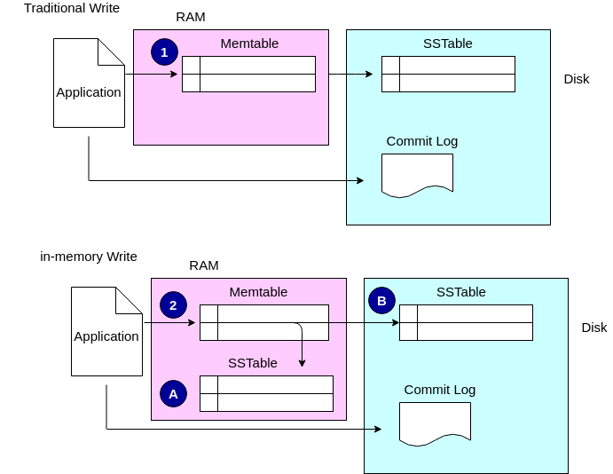

Was this page helpful?
Caution
You're viewing documentation for a previous version. Switch to the latest stable version.
Scylla in-memory tables¶
Added in version 2018.1.7: Scylla Enterprise
Note
This feature is only available with Scylla Enterprise. If you are using Scylla Open Source, this feature will not be available.
Overview¶
In-memory table is a new feature for ScyllaDB Enterprise providing customers with a new solution for lowering their read latency.
Caution
Implement in-memory tables only in cases where the workload fits the proper use case for in-memory tables. See In-memory table use case.
ScyllaDB in-memory solution uses memory locked SSTables which write data in memory (RAM) in addition to disk. This is different from the traditional read/write Scylla scenario where the MemTable (in RAM) is flushed to an SSTable on disk.
In the traditional write data is held temporarily in a MemTable in RAM. When the MemTable (1) is flushed to disk the content is removed and is stored persistently on the disk.
With the in-memory feature, when the MemTable is flushed (2), data is written to RAM as well as to disk. The SSTable in RAM (A) is mirrored on the disk (B).
When using the in-Memory feature, the real benefit is the speed at which a read is done. This is because the data is only read from RAM and not from disk.
When the Scylla node boots, it loads the SSTables into a place in the RAM which is reserved for the SSTables. In order to keep the RAM consumption small you will have to compact more aggressively (in order to reduce space amplification as much as possible). In this manner, read latency is reduced and is more predictable.
In-memory table use case¶
In-memory tables can be used either on a new table or on an existing table.
In-memory tables are suitable for workloads which are primarily read workloads where the data remains static for a long period of time. An example for this could be a table containing monthly specials. The table would be changed on a monthly basis, but is read by customers 24/7.
In-memory tables are not suitable for workloads with data that changes or grows, as this workload will fill the allocated in-memory space. Workloads such as time-series workloads (a table which records heart rates every minute, for example) are not suitable.
It is very important to note that you must calculate carefully the sizes of the tables you want to keep in memory so that you do not over allocate your resources.
Caution
If you do run out of RAM for your in-memory SSTables, an I/O error occurs and the node stops. See Recommended memory limits.
Recommended memory limits¶
It is recommended to keep in-memory tables memory used below 40% of the total amount allocated for in-memory storage size, leaving just more than 60% of the space for compactions.
Maximum RAM allocated for in-memory (
in_memory_storage_size_mb) should leave at least 1 GB per shard for other usages, like Memtable and cache.
Note
Operations such as repair and rebuild may temporarily use large portions of the allocated memory.
In-memory Metrics¶
The following Prometheus metrics can be used to calculate memory usage:
in_memory_store_total_memory- this is the amount of RAM which is currently allocated to in-Memoryin_memory_store_used_memory- this is the amount of RAM allocated to in-Memory which is currently in use. Subtracting these two values will give you the free in-Memory space.
Both metrics are available in the latest Scylla Enterprise dashboard of the ScyllaDB Monitoring Stack .
Enable in-memory¶
This procedure enables the in-memory strategy. Once enabled, it can be applied to any table. It does not change all new tables to in-memory tables.
Configure the in-memory option in the scylla.yaml file:
Open
scylla.yamlfile (located under /etc/scylla/) on any node.Locate the
in_memory_storage_size_mbparameter. It is currently disabled and commented out. Remove the comment mark (#) and change this parameter to a size (in MB) which will be allocated from RAM for your tables.Save the file.
Restart the scylla-server service as follows:
sudo systemctl restart scylla-server
docker exec -it some-scylla supervisorctl restart scylla
(without restarting some-scylla container)
Repeat for all nodes in your cluster.
Create an in-memory table¶
This procedure creates an in-memory table. Repeat this procedure for each in-memory table you want to make.
Confirm you have enough RAM. This is very important if this is not the first in-memory table you are creating. See Recommended memory limits and in-memory Metrics.
Run a CQL command to create a new in-memory table. Set the compaction strategy to in-memory compaction strategy and to set the in_memory property to true.
For example:
CREATE TABLE keyspace1.standard1 (
key blob PRIMARY KEY,
"C0" blob,
"C1" blob,
"C2" blob,
"C3" blob,
"C4" blob )
WITH compression = {}
AND read_repair_chance = '0'
AND speculative_retry = 'ALWAYS'
AND in_memory = 'true'
AND compaction = { 'class' : 'InMemoryCompactionStrategy'
};
Repeat for additional tables.
Change a table to an in-memory table¶
Use this procedure to convert an existing table to an in-memory table.
Check the size of the table you want to convert. Confirm it is smaller than the size you set when you enabled in-memory (see Enable in-memory) and fits within the Recommended memory limits.
nodetool cfstats <keyspaceName.tableName>
The “Space used” parameter is the size of the table. If you already have a table in-Memory make sure to deduct that table’s size from the overall in_memory_storage_size_mb allocation and check that there is enough left to add the new table.
Caution
If the table you want to add is too large, do not convert it to an in-memory table. Over allocating the RAM creates an I/O error and stops the node. See size-example and Recommended memory limits.
Convert the table by running the ALTER CQL command and add the InMemory compaction strategy and set the in_memory property to true.
ALTER TABLE keyspace1.standard1
WITH in_memory='true'
AND compaction = { 'class' : 'InMemoryCompactionStrategy' };
To convert additional tables repeat the process. Remember that the total space for all tables in-Memory cannot exceed the in_memory_storage_size_mb parameter.
For example:
nodetool cfstats keyspace1.standard1
Pending Flushes:0
SSTable count: 8
Space used (live): 7878555
Space used (total): 7878555
In this example, the table is taking up 788 MB. If your Memory allocation is not at least 1580 MB, it is not recommended to convert this table.
Revert a table from RAM to disk¶
You can change a single table to use another strategy.
On the table you want to revert change the table properties to change to a different compaction strategy and set the in_memory property to false. For example:
ALTER TABLE keyspace1.standard1
WITH in_memory='false'
AND compaction = { 'class' : ''LeveledCompactionStrategy'' };
Memory will be returned slowly. If you want to speed up the process, restart the scylla service (
systemctl restart scylla-server).
Disable in-memory¶
Disables in-memory after all the tables have been reverted.
Before you Begin
Verify there are no in-memory tables currently in use. Run a DESCRIBE query on the keysapce(s) or table(s). For example:
DESCRIBE TABLES
If any table is listed as an in-memory table, change it using the ALTER method described in Revert a table from RAM to disk.
For the server and each node, change the configuration in scylla.yaml file
Edit the scylla.yaml file located in /etc/scylla/scylla.yaml.
Change the in_memory_storage_size_mb parameter back to 0 (disabled).
Save the file.
Restart the scylla-server service as follows:
sudo systemctl restart scylla-server
docker exec -it some-scylla supervisorctl restart scylla
(without restarting some-scylla container)
Repeat for all nodes in your cluster.